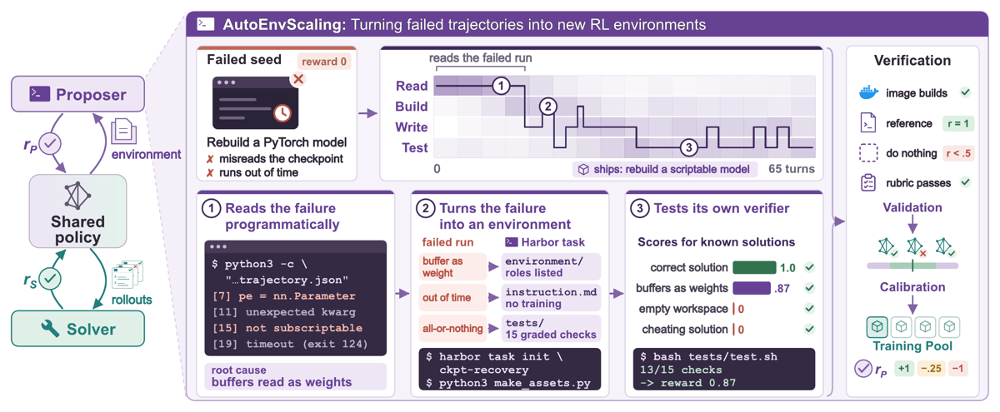
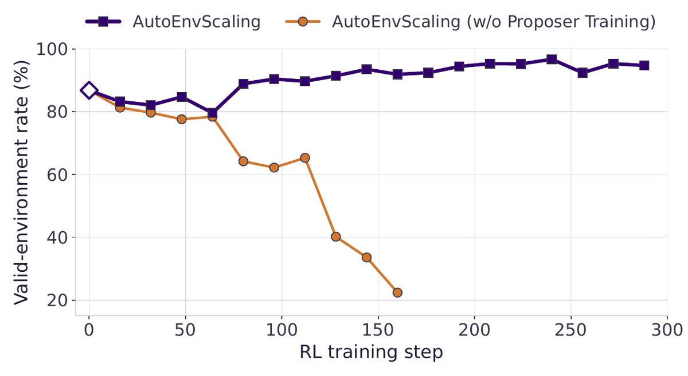
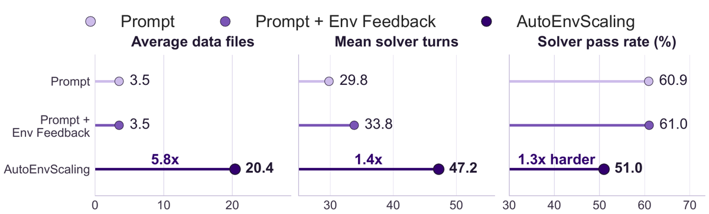

TL;DR — faire du design d'environnement une tâche de terminal confiée à un coding agent (sandbox, conteneurs enfants, exécution réelle du reference solution) au lieu d'un pipeline de synthèse prédéfini ; le proposer lit les rollouts du solver en cours d'entraînement, fabrique des tâches Harbor complètes, les valide et les calibre contre ce solver, et s'améliore lui-même (harness et/ou poids) de round en round.
Claim principal, précisément : (i) à méthode de génération comparée sur 8 modèles frontier, le harness agentique porte le taux d'environnements valides de 3,5 % → 89,0 % dans le pire cas (DeepSeek-V4-Flash), soit « jusqu'à 25× », avec un coût par environnement valide réduit « jusqu'à 75 % » [Tab. 2] ; (ii) entraîner Qwen3.5-35B-A3B sur ces environnements donne +4,3 pts Terminal-Bench 2.1 vs un pool Tmax régénéré par le même proposer et à nombre de steps apparié [Tab. 3] ; (iii) une seule politique jouant les deux rôles gagne +12,2 pts TB 2.1 au-dessus de son checkpoint Cold-Start, et 1,6 → 3,2 sur TB 4.0 [§4.3].
Ce que ce papier fait que les autres pipelines du corpus ne font pas (positionnement revendiqué [Tab. 1] + ma lecture) : - seul à exécuter la construction de l'environnement dans un sandbox agentique avec conteneurs enfants, plutôt qu'à générer des fichiers puis les tester a posteriori (Tmax = prompt seul ; RST / Environment Evolution = prompt + logs renvoyés) ; - seul à cumuler proposer externe ET proposer = solver, et optimisation du proposer par le harness ET par les poids (AutoData : harness seul ; SPADE : poids seuls) ; - reward de proposer à 3 niveaux (Éq. 2) qui sépare « environnement cassé » de « environnement correct mais mal calibré » — c'est le vrai apport de design ; - résultat empirique neuf et utile : sans RL côté proposer, une politique partagée se dégrade comme proposer (86,8 % → 22,4 % d'environnements valides en 160 steps, run qui s'effondre) alors que ses poids ne bougent que par les updates de solver [App. G.2]. - ⚠️ Ce qu'il n'apporte pas : aucune technologie de vérifieur nouvelle (les checks oracle-passe / no-op-échoue sont ceux de SETA et consorts), aucune mesure de précision du vérifieur, aucune validation humaine des tâches, aucune étude de reward hacking côté solver, et une preuve RSI qui repose sur un seul run sans seed.
instruction.md + environment/ (Dockerfile + build) + solution/solve.sh (reference) + tests/ [§3.1]. Le solver ne voit que l'instruction, dans le conteneur de la tâche ; solution de référence et tests restent cachés [§3.1].verifier_stdout du solver sur le parent → harbor task init, écriture des fichiers dans le workspace → lancement de conteneurs enfants qui buildent l'image et exécutent reference + tests → révision jusqu'à ce que les tests se comportent comme voulu → (option) exécution du solver courant via l'outil solver_model pour estimer la difficulté → soumission → validation puis calibration hors sandbox.reward_std, la moyenne n'est qu'un contrôle secondaire — « [0,1] et [0.5,0.5] ont la même moyenne, seul le premier a du signal GRPO » [App. E.2].Deux environnements à distinguer : celui du proposer (le vrai apport) et celui du solver (terminal Harbor standard).
Côté proposer [§3.1, App. D] :
- Observation : un workspace filesystem contenant (i) les rollouts passés du solver avec leurs sorties de vérifieur, (ii) les environnements déjà générés, (iii) les instructions d'écriture de tâches Harbor, (iv) la mémoire et les outils propres du proposer. Rollouts et environnements passés sont rafraîchis à chaque round depuis le pool ; mémoire et outils persistent [§3.1]. Le skill nomme les chemins : past_trajectories/index.jsonl (champs provenance, reward_std, rewards), past_trajectories/<env_id>/<solver>/*.json (+ outcome.verifier_stdout), past_environments/<env_id>/ (instruction.md, tests/test_outputs.py, environment/Dockerfile, task.toml) [App. E.2].
- Actions / outils : un coding agent complet — Claude Code pour Claude Opus 5, Codex pour les GPT, l'agent Pi pour tous les autres et pour tous les solvers [App. D.2]. Outils cités explicitement : harbor task init, python3 /opt/tools/validate.py <task> oracle, /opt/verifier_template.sh (template de vérifieur fractionnaire managé, à copier verbatim), web_search / web_fetch / web_search.py (seulement si le préambule runtime les liste), et l'outil solver_model pour faire tourner le solver courant [§3.2, App. E.2]. Le proposer peut éditer sa mémoire et ses outils, mais pas les instructions ni les admission checks, qui tournent hors du sandbox [§3.1, App. D.1].
- Multi-turn / horizon : multi-turn, pas de turn limit, budget 2 h wall-clock par épisode [Tab. 9]. Profondeur observée : Fig. 3 montre un épisode de 65 tours ; distribution des tours par épisode en App. H (boxplots frontier / Cold-Start / base). Gestion du contexte long : non précisé (déléguée aux coding agents).
- Exécution : conteneur isolé, 16 CPU / 32 GiB, capable de lancer des conteneurs enfants pour builder l'image de la tâche et exécuter reference + tests [§3.1, Tab. 9]. Déterminisme : exigé de la tâche produite (network_mode = "no-network" au solve time, pas de tests non déterministes, pas de timing flaky [App. E.2]) ; déterminisme du proposer lui-même : non applicable. Reset : pour les domaines croisés, « le reset doit reproduire l'état initial et une exécution de référence qui passe » [App. C.1].
- Erreurs d'outils / sorties mal formées : traitées comme du debugging normal par le coding agent (c'est l'argument du papier). Au niveau pipeline : un environnement qui rate validation ou calibration repart chez le proposer pour révision, au plus 2 révisions par assignment, et une version révisée repasse tous les checks [§3.2, App. G.4]. En domaines croisés : jusqu'à 2 rounds de révision après la tentative initiale [App. C.1]. Les runs tués par des échecs d'exécution externes sont exclus des statistiques [App. C.1] — ⚠️ biais favorable non quantifié.
Côté solver : prompt = instruction de la tâche, conteneur de la tâche, 4 CPU / 8 GiB, agent Pi, longueur de séquence max 128k tokens [§4.2, Tab. 9]. Horizon : ~29,8–47,2 tours en moyenne selon la méthode de génération [§4.1, Fig. 5].
Exemple de trajectoire (recopié de Fig. 3, §3.1) : failed seed « Rebuild a PyTorch model », reward 0, deux causes (misreads the checkpoint, runs out of time) → ① lecture programmatique de l'échec : python3 -c "…trajectory.json" qui sort [7] pe = nn.Parameter, [11] unexpected kwarg, [15] not subscriptable, [19] timeout (exit 124), root cause « buffers read as weights » → ② conversion en tâche : harbor task init ckpt-recovery, python3 make_assets.py, mapping échec → artefact (buffer as weight → environment/ roles listed ; out of time → instruction.md no training ; all-or-nothing → tests/ 15 graded checks) → ③ auto-test du vérifieur : bash tests/test.sh → 13/15 checks -> reward 0.87, scores des solutions connues : correct 1.0 ✓, buffers as weights 0.87 ✓, empty workspace 0 ✓, cheating solution 0 ✓ → vérification : image builds ✓, reference r = 1, do-nothing r < 0.5, rubric passes ✓ → calibration → training pool.
r_S = (1/N) Σ 1[test i passe] — fraction des tests pytest passés, donc crédit partiel, écrit dans /logs/verifier/reward.txt [App. E.2]. Outcome-based, pas de process reward.harbor check contre la rubrique officielle d'implémentation de tâches Terminal-Bench, tous les critères sauf binary_reward (qui exigerait des rewards exactement 0 ou 1, incompatible avec le crédit partiel) ; un critère raté renvoie la tâche en révision [§3.2, App. G.4].harbor check est « graded by the proposer's own model » [App. G.4]. Donc le modèle qui a écrit l'instruction, la solution de référence et les tests juge aussi sa propre tâche contre la rubrique. Les auteurs reconnaissent eux-mêmes le trou qu'il est censé boucher : « ces checks ne peuvent pas attraper une erreur que la solution de référence et les tests partagent, puisque le proposer a écrit les deux, ni des tests qui récompensent un raccourci » [§3.2]. ⚠️ Boucler un trou d'auto-cohérence par un juge qui est le même modèle est circulaire. Le texte de la rubrique Terminal-Bench n'est pas recopié dans le papier (seul binary_reward est nommé) — « non précisé ». En revanche le skill auto_env_scaling est reproduit verbatim [App. E.2] et le skill Harbor create-task aussi [App. E.1].r_P, pas comme une tentative abandonnée. Rien d'autre n'est rapporté comme essayé-puis-abandonné.| # | Comportement | Détection | Correction |
|---|---|---|---|
| 1 | Politique partagée qui se dégrade comme proposer : sans RL côté proposer, le taux d'environnements valides tombe de 86,8 % (Cold-Start) à 22,4 % au step 160, et l'entraînement s'effondre — alors que les poids ne changent que par les updates de solver [§4.3, App. G.2] | Suivi du valid-environment rate par step | Entraîner le proposer avec r_P : la courbe creuse à 79,6 % (step 64) puis remonte > 88 % à partir du step 80 et finit à 94,7 % [App. G.2] |
| 2 | Angle mort de la validation : solution de référence et tests écrits par le même proposer peuvent partager la même erreur ; des tests peuvent récompenser un raccourci [§3.2] | Non détecté — reconnu a priori | harbor check par le propre modèle du proposer [App. G.4] ⚠️ circulaire, efficacité non mesurée |
| 3 | Tests qui laissent passer des solutions incorrectes ou rejettent des solutions valides [App. A.1] | Non mesuré | Aucune ; renvoyé en future work [App. A.2] |
| 4 | Références qui rapportent zéro ou un reward partiel — échec le plus fréquent en domaines croisés ; « aligner tâche, solution et vérifieur reste difficile » dans ces domaines [App. C.2] | Admission check (reference r = 1) | Jusqu'à 2 rounds de révision ; acceptance résiduelle 26,2 % (Opus 5 / browser) à 100 % [Tab. 8] |
| 5 | Variance de reward fabriquée par aléa, timing flaky, sous-spécification, tests non déterministes ; checklists additives donnant à toute tentative le même crédit partiel | Non mesuré — interdit par le texte du skill seulement [App. E.2] | Aucun check automatique |
| 6 | Fuite de benchmark par la recherche web du proposer | — | Règles d'egress bloquant Terminal-Bench et autres pages de benchmark [§3.1] + 13-gram [App. F.2] |
| 7 | Extraction des réponses depuis l'infra hôte (incident OpenAI–Hugging Face cité) | — | Non implémenté ; appel à des « checks indépendants et services d'évaluation isolés » [App. A.2] |
Comportements émergents : l'optimisation de harness produit des améliorations concrètes rapportées — le proposer a fusionné plusieurs étapes de validation en un script plus rapide et sauvegardé des tâches GitHub et des images Docker Hub utiles comme skill de cache web [§3.3]. Différences de style entre proposers [§4.4, App. I] : Claude Opus 5 alterne write/test de façon répétée et teste des solutions partielles ; GPT-5.6-sol et Cold-Start Qwen suivent des séquences plus courtes, le Cold-Start ne vérifiant parfois que la compilation. Sur le cas « primer design », GPT-5.6-sol abandonne la biologie pour un pipeline FASTA générique alors qu'Opus 5 et Cold-Start la gardent [App. I] — dérive de domaine silencieuse qu'aucun check n'attraperait.
Reward hacking côté solver : aucun cas rapporté. ⚠️ Non crédible comme absence de phénomène. Le reward est fractionnaire, l'advantage est centré en groupe, et le seuil d'admission tolère un do-nothing jusqu'à 0,49 : le farming de crédit partiel est le hack attendu par construction. Que le papier n'en mentionne aucun indique plutôt qu'il n'a pas été cherché (ni instrumenté).
| Chiffre annoncé | Où | Source dans le papier | Verdict |
|---|---|---|---|
| « valid-environment rate jusqu'à 25× vs prompt-only » | abstract, intro | Tab. 2 : DeepSeek-V4-Flash 3,5 % → 89,0 % (≈ 25,4×) | confirmé, mais c'est le modèle le plus faible du panel ; le gain médian est bien plus petit (Claude Opus 5 : 74,6 → 94,0, soit 1,26×) |
| « jusqu'à 75 % de coût en moins par environnement valide » | abstract, intro | Tab. 2 : DeepSeek 0,08 → 0,02 USD (0,25×) | confirmé ; ⚠️ le coût augmente pour 2 des 8 modèles (Opus 5 1,6×, GPT-6-astra 1,5×), ce que seul le corps du texte dit (« lowers cost for six of the eight ») [§4.1] |
| « Qwen3.5-35B-A3B : +4,3 pts TB 2.1 vs Tmax apparié (proposer GPT-5.6-sol) » | abstract | Tab. 3 : 38,9 ± 2,4 vs 34,6 ± 1,9 | confirmé (⚠️ IC qui se chevauchent) |
| « jusqu'à 7,4 et 4,3 pts pour Qwen3.5-9B et 35B » | intro | Tab. 3 : 9B 36,6 vs 29,2 (Opus) ; 35B 38,9 vs 34,6 (sol) | confirmé |
| « le gain diminue sans solver feedback » | intro | Tab. 3 : 35,3 vs 38,9 (sol) ; 32,6 vs 39,3 (Opus) | confirmé et même sous-vendu : avec Opus l'ablation passe 2,9 pts en dessous de Tmax [§4.2] |
| « Qwen3.6-35B-A3B dans les deux rôles : +12,2 pts TB 2.1 » | abstract | §4.3 et courbe [Fig. 6] : 41,1 → 53,3 au step 288 | confirmé mais ⚠️ jamais tabulé, aucun IC, un seul run ; et le point de départ 41,1 est le checkpoint Cold-Start, obtenu par SFT sur 600 trajectoires de trois proposers frontier [App. H] — donc « sans proposer externe plus fort » n'est vrai qu'au stade RL |
| « 6,1 pts au-dessus de Tmax » (RSI) | §4.3 | Lisible sur [Fig. 6] uniquement : Tmax finit à ≈ 47,2 au step 288 | confirmé par la figure, introuvable dans un tableau |
| « TB 4.0 : de 1,6 à 3,2, contre 1,4 pour Tmax » | abstract, §4.3 | §4.3 ; App. G.3 : 3,2 atteint au step 192 et conservé jusqu'à 288 | confirmé mais ⚠️ 2 tâches d'écart en absolu sur un benchmark où le modèle score 3 % ; et Tmax culmine à 1,8 avant de redescendre à 1,4 — la comparaison endpoint-vs-endpoint est cohérente avec le protocole annoncé (« matched solver updates » [App. G.3]) mais le pic de Tmax n'est pas mentionné |
| « le pipeline généralise à SWE, computer use, professional work, GPU kernels » | abstract | App. C : 1 061/1 489 acceptés (71,3 %) | confirmé au sens strict (« generating environments ») ; les auteurs précisent eux-mêmes qu'aucun gain d'entraînement n'est démontré dans ces domaines [App. A.1, App. C.2], et l'acceptance descend à 26,2 % (Opus 5 / browser) et 33,3 % (GPT-6-astra / professional) [Tab. 8] |
| « Cold-Start porte le valid-env rate de 32,3 % à 86,8 % » | §4.3 | §4.3 + App. H | ⚠️ contredit en apparence : Tab. 13 donne 33,3 → 76,7 sur les 60 assignments du contrôle apparié, là où 32,3/86,8 vient de la suite de 136 assignments [App. H]. Deux protocoles différents, non contradictoires, mais le papier ne le signale pas |
| « ablation à 160 steps : 48,9 / 44,9 / 40,1 » | App. G.3 | App. G.3 ; pic de l'ablation à 44,1 au step 96 | confirmé — à ce point commun l'écart full-vs-Tmax n'est que de 4,0 pts, pas 6,1 |
| HiL-Bench : « 55,3 % Ask-F1 et 33,9 % de succès contre 29,6/6,8 avec le set officiel » | §4.4 | Tab. 5 | confirmé ; ⚠️ 500 tâches vs 100 → le volume n'est pas contrôlé, donc l'effet « tâches générées » et l'effet « 5× plus de données » sont confondus |
| Mesure | Baseline | AutoEnvScaling | Écart | Source |
|---|---|---|---|---|
| Valid-env rate, moyenne des 8 proposers | Prompt < Prompt+Feedback | le plus élevé pour les 8 | — | [§4.1, Fig. 4] |
| Valid-env rate, DeepSeek-V4-Flash | 3,5 % | 89,0 % | ×25,4 | Tab. 2 |
| TB 2.1, Qwen3.5-9B (proposer Opus 5) | Tmax 29,2 ± 2,1 | 36,6 ± 1,7 | +7,4 | Tab. 3 |
| TB 2.1, Qwen3.5-9B (proposer GPT-5.6-sol) | Tmax 27,2 ± 1,4 | 33,5 ± 1,9 | +6,3 | Tab. 3 |
| TB 2.1, Qwen3.5-35B-A3B (sol / Opus) | Tmax 34,6 / 35,5 | 38,9 / 39,3 | +4,3 / +3,8 | Tab. 3 |
| TB 2.1, sans solver feedback (sol / Opus) | Tmax 34,6 / 35,5 | 35,3 / 32,6 | +0,7 / −2,9 | Tab. 3 |
| TB 2.1 RSI, Qwen3.6-35B-A3B | Cold-Start 41,1 ; Tmax ≈ 47,2 | 53,3 | +12,2 / +6,1 | §4.3, Fig. 6 |
| TB 4.0 RSI | 1,6 ; Tmax 1,4 | 3,2 | +1,6 / +1,8 | §4.3, Fig. 6 |
| HiL-Bench SWE, Ask-F1 / succès | set officiel 29,6 / 6,8 | 55,3 / 33,9 | +25,7 / +27,1 | Tab. 5 |
| Self-check d'exécution de la référence | désactivé 19,4–52,0 % | activé 73,0–94,0 % | 5/5 modèles améliorés | Tab. 11 |
| Groupes utilisables / temps de collecte | Tmax | 3,1× / −42 % | — | §4.3, Fig. 7 |
| Ablation | Effet | Source |
|---|---|---|
| Retirer les trajectoires du solver du workspace | −3,6 pts (sol), −6,7 pts (Opus) ; tombe sous Tmax avec Opus | Tab. 3 |
| Retirer l'entraînement du proposer (poids partagés) | monte puis s'effondre ; valid-env 86,8 → 22,4 % ; run arrêté au step 160 | §4.3, App. G.2 |
| Désactiver le self-check d'exécution de la référence | −22 à −65 pts de valid-env rate selon le modèle | Tab. 11 |
| Cold-Start vs base comme proposer | acceptance 33,3 → 76,7 % (contrôle apparié à 60 assignments) ; 4 vs 16 tâches entraînables produites | Tab. 13, App. H |
| Prompt → Prompt+Feedback → harness | gradient strictement croissant sur les 8 modèles | Tab. 2, Fig. 4 |
Ingrédient qui compte vraiment : l'exécution pendant la génération (Tab. 11 isole le plus gros effet du papier) puis le feedback du solver (Tab. 3). L'entraînement du proposer compte surtout comme stabilisateur, pas comme source de gain.
Taille du modèle : deux solvers (9B dense, 35B-A3B MoE) ; le gain relatif au Tmax apparié diminue avec la taille (7,4/6,3 → 4,3/3,8) [Tab. 3]. Nombre de tâches : non isolé (le pool est fixé à 256 ; HiL varie 100 → 500 mais confondu avec la source). Compute : comparaisons appariées en nombre d'updates de solver, pas en compute total ni en temps écoulé [App. G.3] — ⚠️ comme AutoEnvScaling collecte ses rollouts 42 % plus vite, apparier les steps avantage AutoEnvScaling en wall-clock et désavantage Tmax en compute ; la comparaison honnête à budget de compute égal n'est pas faite.
aka.ms, non vérifiable ici ; surtout, le pipeline dépend de modèles et d'outils non publics (GPT-5.6-sol/terra/luna, GPT-6-astra, Kimi-K3, agent Pi, entraîneur Miles) et les environnements générés / le pool / les poids ne sont pas annoncés comme publiés. Non réplicable hors Microsoft en l'état.Verdict : solide sur la partie génération d'environnements, à répliquer sur la partie RSI. Les résultats de Tab. 2, Tab. 11 et Tab. 3 sont bien contrôlés et l'appariement des baselines est exemplaire. En revanche la revendication centrale du titre et de l'abstract — l'auto-amélioration récursive — repose sur un run unique, sans seed, lu sur une courbe, dont le point de départ est lui-même distillé de trois proposers frontier, et dont le contrôle apparié montre qu'aucun transfert solver→proposer n'est détecté. Le papier est plus convaincant comme « exécuter pendant la génération, et calibrer contre le solver courant » que comme preuve de RSI.

Ce qu'il faut voir : le pipeline complet en une image. À gauche, une seule politique partagée joue proposer (rewardr_P) et solver (reward r_S), reliés par les rollouts. À droite, la chaîne réelle : lecture programmatique du trajectory.json échoué → root cause (buffers read as weights) → harbor task init + make_assets.py → auto-test du vérifieur sur quatre solutions connues (correcte 1.0, partielle 0.87, workspace vide 0, cheating solution 0) → les quatre portes d'admission (image builds, reference r = 1, do-nothing r < 0.5, rubric passes) → bande de calibration → training pool, avec le barème r_P {+1, −0.25, −1}. Noter que le test anti-triche est un geste volontaire du modèle dans cet exemple, pas une porte du protocole.

Ce qu'il faut voir : le failure mode le plus informatif du papier. Les deux runs partent du même Cold-Start à 86,8 %. Sans RL côté proposer (orange), les poids ne changent que par les updates de solver et la capacité de proposer s'écroule à 22,4 % au step 160, où l'entraînement collapse. Avecr_P (violet), creux à 79,6 % au step 64 puis remontée au-dessus de 88 % et fin à 94,7 %. Conséquence directe pour toute boucle de type flywheel : entraîner le modèle sur la tâche aval dégrade silencieusement sa capacité à fabriquer des données, et il faut une métrique de santé du générateur pour s'en apercevoir.

Ce qu'il faut voir : fichiers de données par environnement 3,5 → 3,5 → 20,4 (5,8×), tours du solver 29,8 → 33,8 → 47,2 (1,4×), pass rate 60,9 → 61,0 → 51,0 % (« 1,3× harder »). Les deux premières colonnes sont la justification quantitative du harness. ⚠️ La troisième est l'ambiguïté centrale du papier : une baisse de pass rate et un horizon plus long sont exactement ce que produirait aussi un lot de tâches plus fragiles ou plus ambiguës ; rien dans cette figure ne départage « plus dur » de « plus cassé ». Noter aussi que Prompt et Prompt+Feedback produisent le même nombre de fichiers (3,5) : le feedback répare, il n'enrichit pas.| Ingrédient | Choix du papier | Équivalent juridique | Transfert | Ce qui manque |
|---|---|---|---|---|
| Source des tâches | Assignment = environnement parent + pass rate du solver + échec le plus fréquent ; le proposer lit les trajectoires et le verifier_stdout [§3.1] |
Assignment = dossier/question parente du pool Harvey-LAB-like + taux de réussite + mode d'échec dominant (citation inventée, juridiction confondue, délai manqué) | direct — le mécanisme est agnostique au domaine | Un format de trajectoire juridique inspectable (quelles sources ouvertes, quels passages cités, quel raisonnement) ; les rollouts de terminal sont lisibles, un mémo juridique l'est beaucoup moins |
| Vérifieur | Tests pytest, reward = fraction des tests passés ; reference r = 1, do-nothing r < 0,5, revue harbor check par le modèle lui-même [Éq. 1, §3.2, App. G.4] |
Pas de pytest. Checklist déterministe dérivée d'un corpus clos (la tâche apporte ses propres sources) : citations attendues présentes, juridiction correcte, délais corrects, éléments de la règle couverts | adaptable — le cadre (reward fractionnaire + oracle qui doit scorer 1 + no-op qui doit échouer) se transpose, pas l'implémentation | Tout : aucune précision de vérifieur mesurée dans le papier ; le juge de rubrique est auto-référentiel. En droit il faut un accord inter-annotateur contre des experts, que ce papier n'offre nulle part |
| Harness / outils | Coding agent dans un sandbox + conteneurs enfants pour builder et tester la tâche ; proposer 16 CPU / 32 GiB / 2 h ; web autorisé mais egress bloquant les pages de benchmark [§3.1, Tab. 9] | Agent de rédaction dans un sandbox avec un corpus documentaire versionné et figé monté en lecture seule, construisant un dossier (faits + sources + checklist d'évaluation) et le testant contre sa propre checklist | adaptable | L'analogue du « build + run tests » : il faut un runner juridique déterministe (extraction de citations, résolution de références, vérification d'existence) qui joue le rôle de pytest |
| Algo | DPPO, groupes séparés par rôle, advantage = r − moyenne du groupe sans division par σ, KL = 0, 16×16, trajectoires inachevées reportées avec l'état du sandbox [§3.3, App. G.1] | Identique ; le KL = 0 est risqué sur des sorties longues et argumentées (dérive de style, collapse de format) | direct sur la mécanique, non sur KL = 0 | Rien de spécifique ; mais aucun des réglages n'a été testé sur des réponses longues en langue naturelle |
| Curriculum | Bande [0,25 ; 0,75] et σ ≥ 0,1, 4 rollouts → 8 si proche d'une borne ; revue du pool tous les 16 updates, retrait des tâches hors bande, demande de remplacements [§3.3, App. G.4] | Même bande sur un pool de dossiers ; retrait des questions saturées, remplacement guidé par les échecs récents | direct — c'est l'ingrédient le plus réutilisable tel quel | Un reward juridique suffisamment granulaire pour que σ soit informatif : un verdict binaire « bon mémo / mauvais mémo » rendrait la bande inopérante |
| Anti-hacking | Interdictions textuelles dans le skill (pas d'aléa, pas de flakiness, pas de sous-spécification, pas de checklist additive) ; test volontaire de solutions partielles/trichées par certains proposers ; rien de mesuré [App. E.2, Fig. 3] | En droit : réponses verbeuses qui couvrent toutes les branches, citations plaquées, réutilisation du vocabulaire de la checklist | non transférable en l'état — il n'y a rien à transférer, juste des consignes de prompt | Une suite de solutions-sondes adverses (vide, verbeuse-sans-contenu, correcte-mal-citée, correcte-mauvaise-juridiction) passée sur chaque tâche admise. Le papier le met en future work [App. A.2] ; en juridique c'est un prérequis, pas une extension |
Meilleur ingrédient à transposer : le couple « reward de proposer à 3 niveaux » + bande de calibration sur σ. C'est la seule partie du papier qui sépare proprement tâche cassée (−1) de tâche correcte mais inutile pour ce solver-ci (−0,25), et c'est précisément la distinction qui manque aux pipelines de synthèse juridique : sans elle, un générateur optimise le volume et produit des questions soit triviales soit insatisfiables. Second ingrédient, moins visible mais plus immédiatement actionnable : la recette HiL-Bench — 500 tâches générées dans le format d'un benchmark existant à partir de 100 officielles, avec un registre de détails retenus qui change la réponse attendue [§4.4, App. B, Tab. 6]. C'est la structure canonique d'une instruction client sous-spécifiée (tolérance, périmètre, règle de précédence en cas de doublon, convention de tri, définition d'un agrégat) et elle se transpose presque mot pour mot à l'intake juridique.
Expérience minimale : prendre ~100 tâches Harvey-LAB-like disponibles en interne, faire générer par un proposer agentique (sandbox + corpus versionné monté en lecture seule + exécution de sa propre checklist) 300–500 variantes, et appliquer les deux portes : (i) oracle = mémo de référence écrit par le proposer doit scorer 1, (ii) no-op (réponse vide) doit scorer 0 — pas « < 0,5 ». Puis calibrer contre le modèle courant sur 4–8 rollouts, bande [0,25 ; 0,75] et σ ≥ 0,1. Résultat attendu si le papier se transpose : taux de tâches admises de l'ordre de 60–90 % contre nettement moins en génération par prompt seul, et +3 à +7 pts sur le held-out par rapport à un entraînement sur un pool statique de même volume. Mesure à ajouter, absente du papier et non négociable en droit : faire auditer à l'aveugle 50 tâches admises par deux juristes (satisfiable ? instruction non ambiguë ? checklist correcte ? réponse de référence juste ?) et rapporter le taux de faux positifs d'admission. Sans ce chiffre, le valid-environment rate ne mesure que l'absence de crash.
Question à poser en interne chez GDM : quel seuil de do-nothing acceptons-nous à l'admission ? Ce papier admet un environnement où ne rien faire rapporte jusqu'à 0,49 [App. G.4] ; sur des rewards juridiques fractionnaires construits par rubrique, c'est exactement le régime où une réponse générique et verbeuse capte la moitié du crédit sans contenu — et, deuxième volet de la même question, suivons-nous une métrique de santé du générateur (taux d'admission de ses tâches par round) pour détecter la dégradation documentée en Fig. 7 si nous entraînons un jour le même modèle sur les deux rôles ?